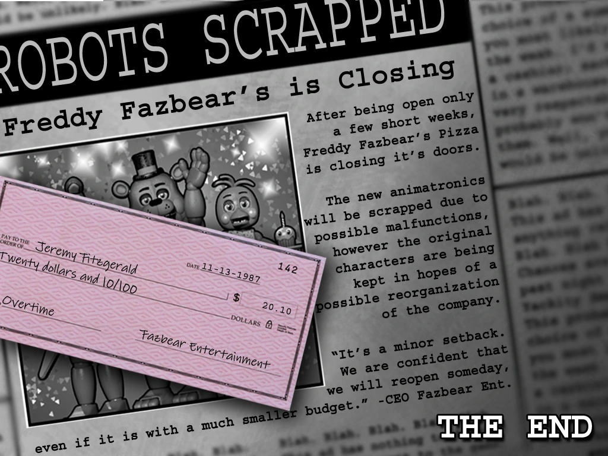

Connecting The Games!
What Is Being Connected?
With the biggest issue being the timeline, the question that a lot of people ask is “Why not just follow the game order?” To be blunt, it doesn’t work. Five Nights At Freddie’s 4 takes place in 1983, as the 8-bit minigames show that the room that the player sees as they hide from the Nightmare Animatronics is the Crying Child- the Bite Victim and William Afton’s youngest son. FNaF 2 has visible proof- in the form of the paycheck at the end of the game -that it takes place in 1987. And that is just two examples of how the games aren’t in order. So to solve the timeline, you need to pay even closer attention to the details. 
FNaF 1 takes place in November of 1993, which was confirmed based on a “Faz-Fact” from FNaF AR: Special Delivery. It states, “In 1993, the most dangerous profession in the United States was actually night security guard.” The creator of the games, Scott Cawthon confirmed this is canon, giving way to the idea of FNaF 1’s placement. So as it goes now, FNaF 4, FNaF 2, FNaF 1. So where is FNaF 3? Is it before or after?
Well, FNaF 3 is actually the easiest one to place on the timeline. In its description on the gaming platform Steam, it states it takes place 30 years after “Freddie Fazbear’s Pizza closed its doors”. So FNaF 3 takes place in 2023- which is why it is commonly called “the Year of FNaF”. FNaF 6- which is called Pizzeria Simulator -takes place a few months after FNaF 3, based on in-game dialogue. This is the easiest part of the timeline to establish, meaning that altogether we’re close to being done!

So what comes next? Well, in Security Breach, Freddie’s was fixed up by a mystery CEO who makes the mega pizza plex which is where our main character Greggory gets stuck. This puts it roughly a few years after FNaF 6, with Ruin taking place a few months after that. There’s not much evidence on what years the last two games take place so altogether they take place across the late 2020’s. Help Wanted 1 and 2 both take place a few months before the start of Security Breach and Ruin respectively.
Notice a missing number? Particularly a 5? FNaF 5- aka Sister Location -is the most controversial part of the whole timeline. If we follow the same tactic of looking at the 8-bit minigames, then we see Elizabeth Afton getting killed by Baby. This also fits with FNaF 4. Based on the Nightmare Animatronics, you can tell they have teeth in their stomachs- like the blueprints for Baby. This also would explain the empty girl’s room in FNaF 4. They are clearly Afton’s designs, so that solves it right? FNaF 5 came first?
Nope. You can clearly see that the blueprints are for Afton Animatrocs- William’s company. He would have needed to collect kids to revive his dead son as he promised him in FNaF 4. But the issue is: Afton has no motive. There is no reason for him to make killer animatronics that would kill his daughter because his son– who he was doing this all for -is alive. Sister Location single-handedly derails the whole timeline with the unknown placement. Meaning that as of now, the only game left to connect is Sister Location.
Here are the orginal core four animatronics!